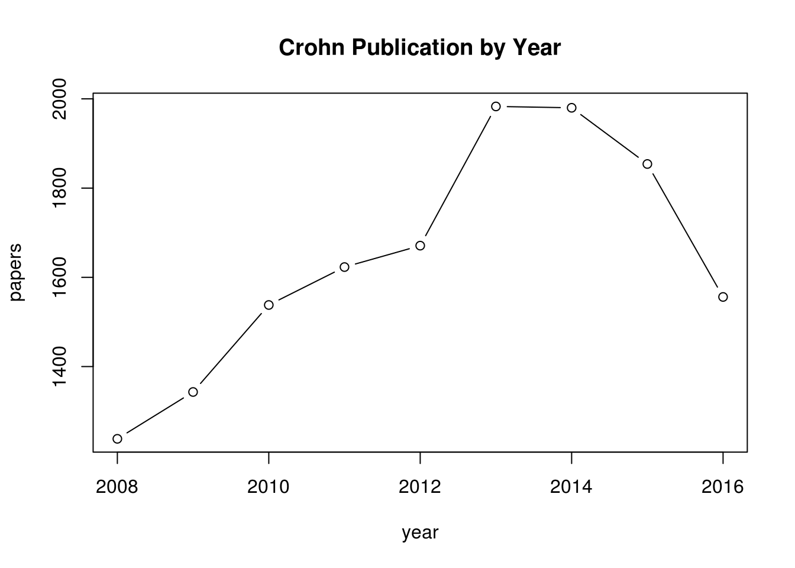

This section takes a txt document over previously downloaded abstracts and reads them into a corpus then performs a basic text mining pipline analsis on them. The search term used was ‘crohn’s disease’ These were the first 200 articles that came up at the time.
library(tm)
library(pubmed.mineR)
library(ggplot2)
library(wordcloud)
library(qgraph)
rm(list=ls()); gc(reset = TRUE)
source("C:/Users/Kirk/Documents/Biomedical Text Mining Resources/TextMining_Analysis_Function.R")
# first 400 abstracts
# abstracts <- readabs("pubmed_result_crohns_search1.txt")
abstracts <- readabs("pubmed_result_colorectalcancer.txt")
corpus <- abstracts@Abstract
corpus <- SimpleCorpus(VectorSource(corpus))# TM.Analysis(corpus = corpus)
corpus <- tm_map(corpus, content_transformer(tolower))
corpus <- tm_map(corpus, content_transformer(removePunctuation))
corpus <- tm_map(corpus, content_transformer(removeNumbers))
corpus <- tm_map(corpus, content_transformer(stripWhitespace))
myStopwords <- c(stopwords("english"),"please","thanks","thank","pm", "mg","cc")
corpus <- tm_map(corpus, removeWords, myStopwords)
freq <- ceiling((0.05 * length(corpus)))
tdm <- TermDocumentMatrix(corpus,control = list(wordLengths = c(2, Inf)))
tdm <- removeSparseTerms(tdm, 0.9)
freq.terms <- findFreqTerms(tdm, lowfreq = freq)
term.freq <- rowSums(as.matrix(tdm))
term.freq <- subset(term.freq,term.freq >= freq)
term.freq <- sort(term.freq, decreasing = TRUE)
freq.df <- data.frame(term = names(term.freq), freq = term.freq)
term.cor <- sapply(freq.terms, function(x){findAssocs(tdm, x, 0.3)})
m <- as.matrix(tdm)
word.freq <- sort(rowSums(m), decreasing = T)
m2 <- t(m)
colnames(m2) <- rownames(tdm)
clust <- min(c(8, floor(sqrt(length(corpus)/log(length(corpus))))))
kmeansResult <- kmeans(m2, clust)
round(kmeansResult$centers, digits = 3)
grp.list <- list()
for( i in 1 : clust ) {
clust.name <- paste("Cluster", i, sep = "")
s <- sort(kmeansResult$centers[i,], decreasing = TRUE)
grp.list[[i]] <- match(names(s)[1 : (10*freq)], colnames(m2))
}
file.txt <- paste(deparse(substitute(corpus)), "tm.analysis.txt", sep = ".")
sink(file.txt)
print(term.cor)
for( i in 1 : clust ){
cat(paste("cluster ",i,": ",sep=""))
s<-sort(kmeansResult$centers[i,],decreasing=T)
cat(names(s)[1:6],"\n")
}
sink()
file.pdf <- paste(deparse(substitute(corpus)), "tm.analysis.pdf", sep = ".")
pdf(file.pdf,onefile = TRUE, paper = "letter")
ggplot(freq.df, aes(x = term, y = freq)) +
geom_bar(stat = "identity") +
xlab("Terms") +
ylab("Count") +
coord_flip()
wordcloud(words = names(word.freq),
freq = word.freq,
min.freq = freq,
random.order = FALSE)
qgraph(cor(m2),
threshold = 0.3,
cut = 0.65,
layout = "spring",
groups = grp.list,
vsize = 3,
labels = colnames(m2))
dev.off()https://cran.rstudio.com/web/packages/rentrez/vignettes/rentrez_tutorial.html
# install.packages(rentrez)
library(rentrez)
rm(list = ls()); gc(reset = TRUE)## used (Mb) gc trigger (Mb) max used (Mb)
## Ncells 1245026 66.5 2164898 115.7 1245026 66.5
## Vcells 2653587 20.3 7969504 60.9 2653587 20.3entrez_dbs()## [1] "pubmed" "protein" "nuccore"
## [4] "ipg" "nucleotide" "nucgss"
## [7] "nucest" "structure" "sparcle"
## [10] "genome" "annotinfo" "assembly"
## [13] "bioproject" "biosample" "blastdbinfo"
## [16] "books" "cdd" "clinvar"
## [19] "clone" "gap" "gapplus"
## [22] "grasp" "dbvar" "gene"
## [25] "gds" "geoprofiles" "homologene"
## [28] "medgen" "mesh" "ncbisearch"
## [31] "nlmcatalog" "omim" "orgtrack"
## [34] "pmc" "popset" "probe"
## [37] "proteinclusters" "pcassay" "biosystems"
## [40] "pccompound" "pcsubstance" "pubmedhealth"
## [43] "seqannot" "snp" "sra"
## [46] "taxonomy" "biocollections" "unigene"
## [49] "gencoll" "gtr"# searching pubmed
crohn_search <- entrez_search(db = "pubmed", term = "crohn", retmax = 40)
crohn_search$ids## [1] "28945207" "28945206" "28944071" "28937552" "28929387" "28922207"
## [7] "28914206" "28913968" "28902728" "28901585" "28900730" "28891095"
## [13] "28889960" "28888700" "28882937" "28882418" "28880453" "28877189"
## [19] "28874419" "28873511" "28873259" "28870035" "28869658" "28869010"
## [25] "28864649" "28864042" "28858439" "28857255" "28853805" "28851611"
## [31] "28851283" "28848798" "28848781" "28846760" "28843920" "28839910"
## [37] "28839909" "28839907" "28839887" "28839872"search_year <- function(year, term){
query <- paste(term, "AND (", year, "[PDAT])")
entrez_search(db="pubmed", term=query, retmax=0)$count
}
year <- 2008:2016
papers <- sapply(year, search_year, term="crohn", USE.NAMES=FALSE)
plot(year, papers, type='b', main="Crohn Publication by Year")
all_the_links <- entrez_link(dbfrom='pubmed', id=crohn_search$ids[2], db='all')
all_the_links$links## elink result with information from 5 databases:
## [1] pubmed_pubmed pubmed_pubmed_combined
## [3] pubmed_pubmed_five pubmed_pubmed_reviews
## [5] pubmed_pubmed_reviews_fiveall_the_links <- entrez_link(dbfrom='gene', id=351, db='all')
all_the_links$links## elink result with information from 54 databases:
## [1] gene_bioconcepts gene_biosystems
## [3] gene_biosystems_all gene_clinvar
## [5] gene_clinvar_specific gene_dbvar
## [7] gene_genome gene_gtr
## [9] gene_homologene gene_medgen_diseases
## [11] gene_pcassay_alltarget_list gene_pcassay_alltarget_summary
## [13] gene_pcassay_rnai gene_pcassay_target
## [15] gene_probe gene_structure
## [17] gene_bioproject gene_books
## [19] gene_cdd gene_gene_h3k4me3
## [21] gene_gene_neighbors gene_genereviews
## [23] gene_genome2 gene_geoprofiles
## [25] gene_nuccore gene_nuccore_mgc
## [27] gene_nuccore_pos gene_nuccore_refseqgene
## [29] gene_nuccore_refseqrna gene_nucest
## [31] gene_nucest_clust gene_nucleotide
## [33] gene_nucleotide_clust gene_nucleotide_mgc
## [35] gene_nucleotide_mgc_url gene_nucleotide_pos
## [37] gene_omim gene_pcassay_proteintarget
## [39] gene_pccompound gene_pcsubstance
## [41] gene_pmc gene_pmc_nucleotide
## [43] gene_protein gene_protein_refseq
## [45] gene_pubmed gene_pubmed_citedinomim
## [47] gene_pubmed_pmc_nucleotide gene_pubmed_rif
## [49] gene_snp gene_snp_geneview
## [51] gene_sparcle gene_taxonomy
## [53] gene_unigene gene_varviewall_the_links$links$gene_pmc[1:10]## [1] "5561919" "5560349" "5559291" "5548265" "5540602" "5434815" "5395029"
## [8] "5360245" "5233555" "5104494"paper_links <- entrez_link(dbfrom="pubmed", id=25500142, cmd="llinks")
paper_links## elink object with contents:
## $linkouts: links to external websitespaper_links$linkouts## $ID_25500142
## $ID_25500142[[1]]
## Linkout from Elsevier Science
## $Url: https://linkinghub.elsevie ...
##
## $ID_25500142[[2]]
## Linkout from Europe PubMed Central
## $Url: http://europepmc.org/abstr ...
##
## $ID_25500142[[3]]
## Linkout from Ovid Technologies, Inc.
## $Url: http://ovidsp.ovid.com/ovi ...
##
## $ID_25500142[[4]]
## Linkout from PubMed Central
## $Url: https://www.ncbi.nlm.nih.g ...
##
## $ID_25500142[[5]]
## Linkout from PubMed Central Canada
## $Url: http://pubmedcentralcanada ...
##
## $ID_25500142[[6]]
## Linkout from MedlinePlus Health Information
## $Url: https://medlineplus.gov/al ...
##
## $ID_25500142[[7]]
## Linkout from Mouse Genome Informatics (MGI)
## $Url: http://www.informatics.jax ...linkout_urls(paper_links)## $ID_25500142
## [1] "https://linkinghub.elsevier.com/retrieve/pii/S0014-4886(14)00393-8"
## [2] "http://europepmc.org/abstract/MED/25500142"
## [3] "http://ovidsp.ovid.com/ovidweb.cgi?T=JS&PAGE=linkout&SEARCH=25500142.ui"
## [4] "https://www.ncbi.nlm.nih.gov/pmc/articles/pmid/25500142/"
## [5] "http://pubmedcentralcanada.ca/pmcc/articles/pmid/25500142"
## [6] "https://medlineplus.gov/alzheimersdisease.html"
## [7] "http://www.informatics.jax.org/reference/25500142"# passing in more than one link
all_links_together <- entrez_link(db="protein",
dbfrom="gene",
id=c("93100", "223646"))
all_links_together## elink object with contents:
## $links: IDs for linked records from NCBI
## # same as above but keeping the gene and protein ids together
all_links_sep <- entrez_link(db = "protein", dbfrom = "gene", id = c("93100", "223646"), by_id=TRUE)
all_links_sep## List of 2 elink objects,each containing
## $links: IDs for linked records from NCBI
## lapply(all_links_sep, function(x) x$links$gene_protein)## [[1]]
## [1] "1034662002" "1034662000" "1034661998" "1034661996" "1034661994"
## [6] "1034661992" "558472750" "545685826" "194394158" "166221824"
## [11] "154936864" "122346659" "119602646" "119602645" "119602644"
## [16] "119602643" "119602642" "37787309" "37787307" "37787305"
## [21] "33991172" "21619615" "10834676"
##
## [[2]]
## [1] "148697547" "148697546" "81899807" "74215266" "74186774"
## [6] "37787317" "37589273" "31982089" "26339824" "26329351"